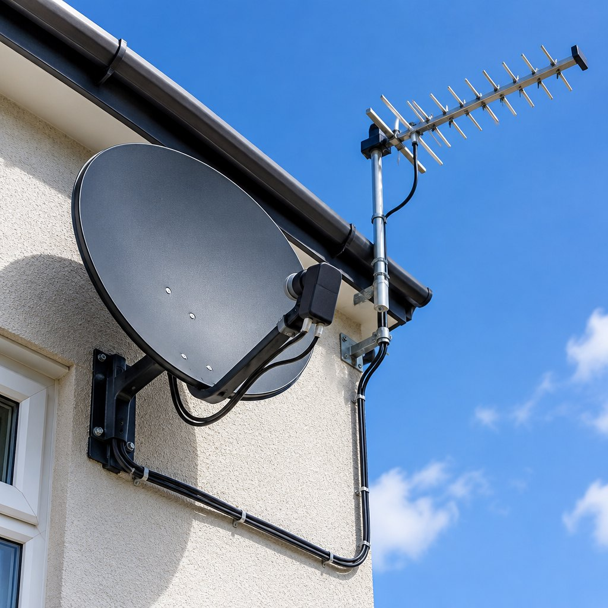
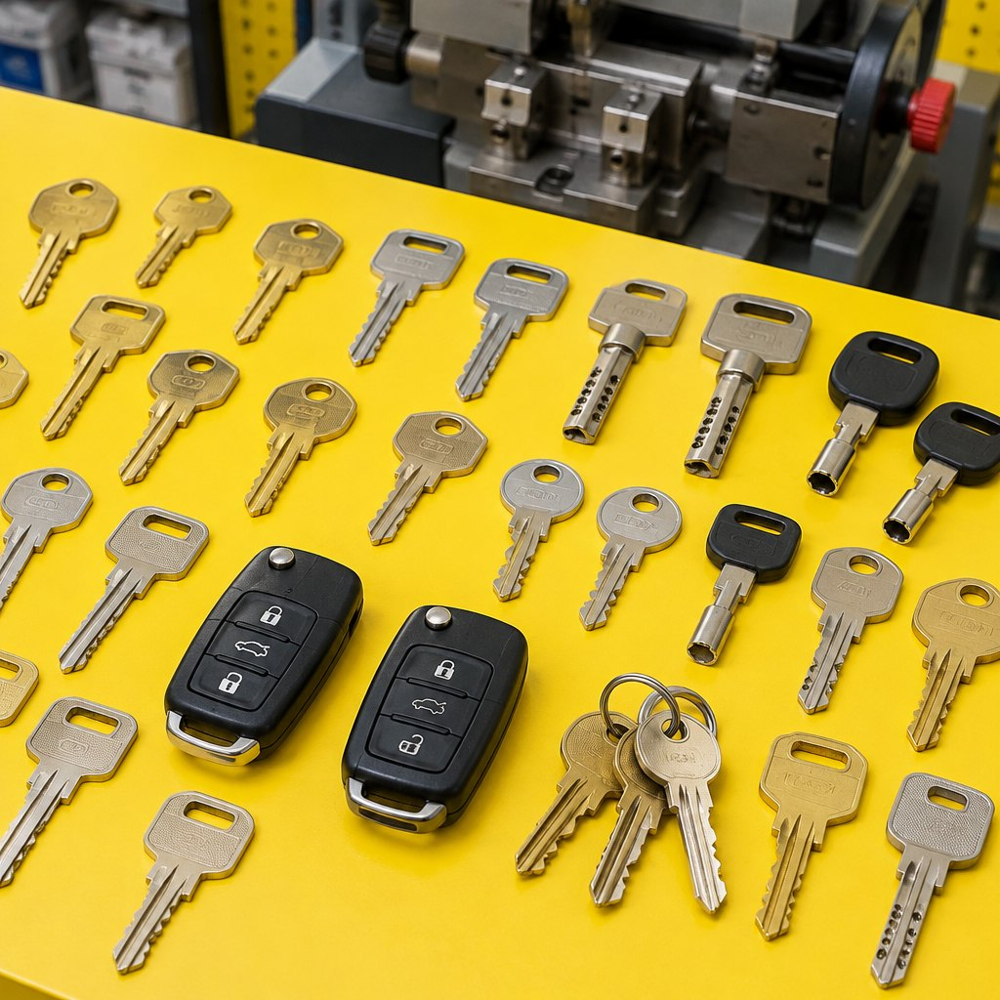
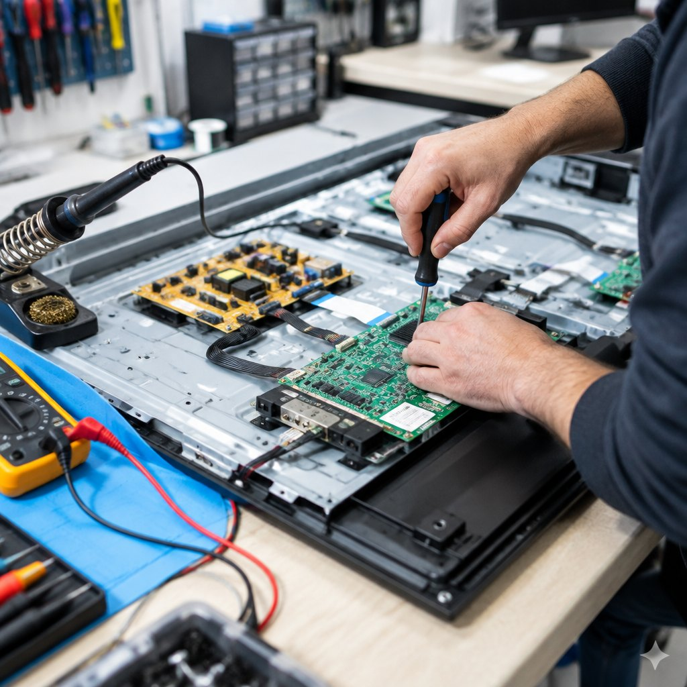
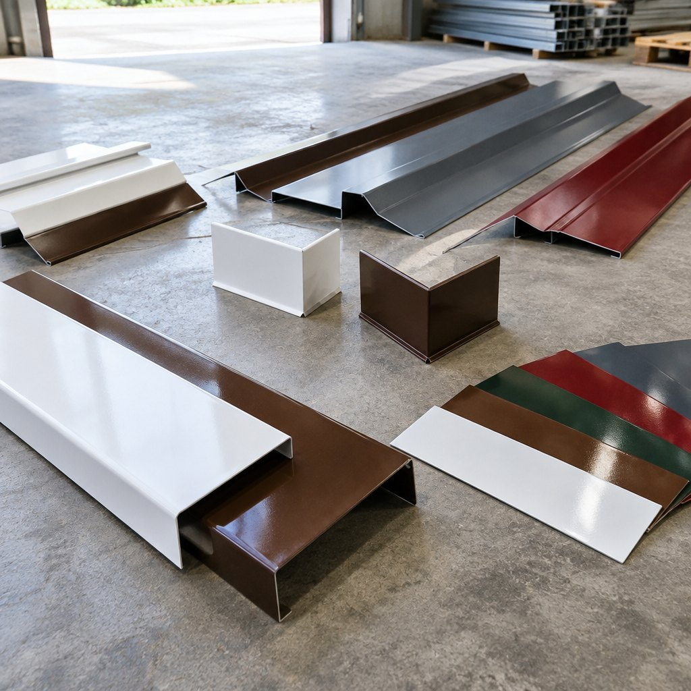
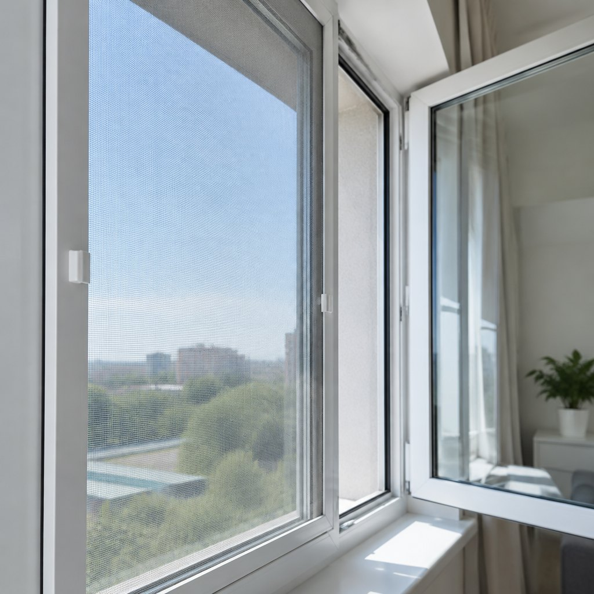

Ключи, антенны, листогиб
и москитные сетки
Бытовые услуги в Толочине, Дзержинского 11: изготовление ключей, ремонт телевизоров, эфирные и спутниковые антенны, изделия из листового металла и москитные сетки. Приносите образец или фото — скажем, что можно сделать.
Пять направлений
под одной вывеской
Ключи, телевизор, антенна, отлив с уголком и москитная сетка — всё в одном месте на Дзержинского, 11. Без записи на неделю вперёд: приходите или позвоните.
Изготовление ключей
Все виды ключей: принесите образец, подберём заготовку и сделаем дубликат при вас.
- Квартирные, замковые и сейфовые
- Домофонные и почтовые
- Автомобильные дубликаты и брелоки
- Заготовки в наличии, подбор по образцу

Ключи · Толочин, Дзержинского 11Ремонт телевизоров
Диагностика и восстановление работоспособности: сначала смотрим, потом называем объём и стоимость.
- Диагностика и поиск неисправности
- Ремонт платы и блока питания
- Замена подсветки
- Проверка и настройка после ремонта

Ремонт телевизоровАнтенны: эфирные и спутниковые
Монтаж, установка, проверка и настройка. Подключаем и настраиваем пакеты спутникового телевидения.
- Эфирные антенны, 20 каналов
- Триколор, НТВ Плюс, МТС ТВ
- Монтаж и установка на дом или мачту
- Проверка сигнала и настройка каналов
Изделия из листового металла
Гнём на своём листогибе: отливы, откосы, уголки и любые доборные элементы для кровли, фасада и окон.
- Отливы, откосы, уголки, нащельники
- Доборные элементы для кровли и фасада
- Широкий выбор цвета, металл с полимерным покрытием
- Максимальная длина изделия — 3 метра
- Быстрые сроки: простые детали — в день обращения

Листогиб · отливы, откосы, уголкиМоскитные сетки
Изготовление и ремонт: замер, изготовление по размеру, монтаж на пластиковые и деревянные окна.
- Изготовление сеток по вашим размерам
- Ремонт: замена полотна и креплений
- Замер и монтаж на окно или дверь
- Работаем по городу и району

Москитные сетки · замер и монтажКак проходит
работа
Короткая цепочка: без бумажной волокиты и «оставьте, мы позвоним, когда вспомним».
Звонок, сообщение или визит на Дзержинского, 11.
Смотрим ключ, телевизор или точку установки антенны.
Называем, что делаем и сколько это стоит, до начала работ.
Изготовление ключа, ремонт или монтаж антенны.
Проверяем результат при вас: ключ, изображение, сигнал.
БытСервис
в Толочине
Мастерская бытовых услуг: Дзержинского, 11. Ключи и телевизоры, антенны и сетки, а также изделия из листового металла с листогиба — отливы, откосы, уголки и доборные элементы.
- Адрес: Толочин, ул. Дзержинского, 11
- Телефон: +375 (29) 511-37-00
- УНП 391972423
- Ключи, ремонт телевизоров, антенны
- Листогиб: отливы, откосы, уголки, доборные элементы
- Москитные сетки: изготовление, ремонт, монтаж
Режим работы уточняйте по телефону: он меняется по сезону.
Коротко
по делу
Можно ли сделать ключ по замку, а не по образцу?
Да, если привезёте замок или цилиндр. По образцу проще и быстрее, по замку — точнее, если ключ уже изношен.
Сколько занимает изготовление ключа?
Простые ключи делаем при вас, за несколько минут. Сложные заготовки и автомобильные дубликаты могут потребовать времени — скажем сразу при обращении.
Ремонтируете телевизоры с любой матрицей?
Сначала диагностика. Если ремонт невозможен или невыгоден, скажем об этом прямо, а не будем тянуть.
Ставите антенну за городом?
Да, выезжаем. Стоимость зависит от расстояния, высоты установки и материала стены — уточняйте по телефону.
Какой длины можете согнуть изделие?
Максимальная длина одного изделия — 3 метра. Если нужен длиннее, делаем стык с нахлёстом и подсказываем, как его правильно поставить.
Сколько ждать отлив или уголок?
Простые детали — обычно в день обращения или на следующий. Цвет и размер согласуем сразу, чтобы не переделывать.
Сетки только на пластиковые окна?
Ставим на пластиковые и деревянные окна, а также на балконные и входные двери. Ремонт — замена полотна, креплений, углов.
А если нужна кровля или откосы?
Это второе направление «Бытсервиса» в Ушачах: листогиб, доборные элементы кровли, откосы, заборы. Смотрите разделы сайта.
Ключ, отлив
или сетка?
Толочин, Дзержинского, 11. Позвоните или напишите — подскажем по вашему случаю.